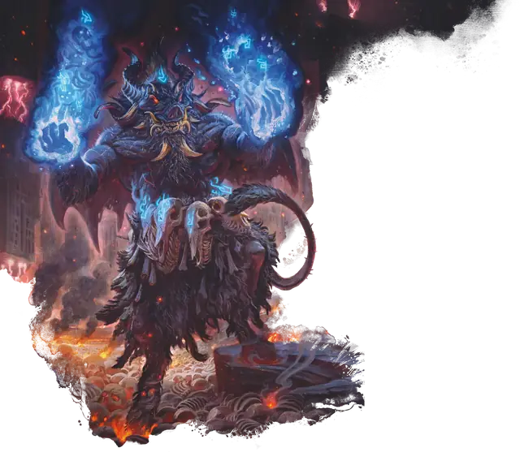

Нальфешни
Nalfeshnee
Большое Исчадие (Демон), Хаотичное Злое

Класс Защиты 18 Инициатива +5 (15)
Хиты 184 (16к10 + 96)
Скорость 20 футов, Полёта 30 футов
| мод | спас | ||
|---|---|---|---|
| СИЛ | 21 | +5 | +5 |
| ЛОВ | 10 | +0 | +0 |
| ТЕЛ | 22 | +6 | +11 |
| мод | спас | ||
|---|---|---|---|
| ИНТ | 19 | +4 | +9 |
| МДР | 12 | +1 | +6 |
| ХАР | 15 | +2 | +7 |
Сопротивление урону Огонь, Холод, Электричество
Иммунитеты Яд; Испуганный, Отравленный
Чувства пассивное Восприятие 11, Истинное зрение 120 футов
Языки Бездны, Телепатия 120 фт.
Опасность 13 (10 000 опыта; БВ +5)
Особенности
Восстановление демона. Когда нальфешни умирает за пределами Бездны, его тело растворяется в ихоре и в тот же миг заново возрождается со всеми Хитами где-то в Бездне.
Сопротивление магии. Нальфешни совершает с Преимуществом спасброски от заклинаний и прочих магических эффектов.
Действия
Мультиатака. Нальфешни совершает три атаки Раздиранием.
Раздирание. Бросок рукопашной атаки: +10, досягаемость 10 фт. Попадание: 16 (2к10 + 5) Рубящего урона плюс 11 (2к10) Силового урона.
Телепортация. Нальфешни телепортируется на расстояние до 120 футов в видимое им незанятое пространство.
Бонусные действия
Ореол ужаса (Перезарядка 5–6). Спасбросок Мудрости: Сл 15, каждое существо в 15-футовой Эманации, исходящей от нальфешни. Провал: 28 (8к6) Психического урона, и цель Испугана либо на 1 минуту, либо пока не получит урон или не закончит свой ход вне линии видимости нальфешни. Успех: Цель становится невосприимчива к Ореолу ужаса этого нальфешни на 24 часа.
Реакции
Преследование. Условие: Другое существо, которое нальфешни видит, заканчивает свой ход в пределах 120 футов от него. Эффект: Нальфешни использует Телепортацию, но его точка назначения должна быть в пределах 10 футов от вызвавшего ответ существа.
Бонус мастерства +5
Среда обитания Бездна
Сокровища Реликварные
Нальфешни
Демон устрашения и безнадёжности
Нальфешни пытаются поработить любого, с кем сталкиваются. Эти неуклюжие и гротескные демоны сочетают в себе телосложение огра и уродливые черты зверей. С помощью грубой силы и хитрости нальфешни управляют культистами и более слабыми демонами и заставляют их участвовать в бесконечных войнах Бездны или кознях на Материальном плане.
Многие нальфешни желают стать демоническими владыками и стремятся завоевать собственное царство. Они часто обещают честолюбивым смертным награду в виде магии исчадий или союза с Бездной, чтобы склонить их к заключению роковой сделки. Потеряв терпение, нальфешни призывают призраков Бездны и другие кошмары, чтобы запугать и заставить других подчиниться.